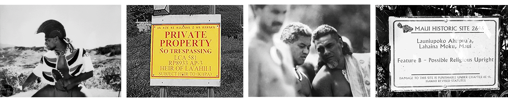

PROJECTS
ABOUT
SOCIAL PRACTICE
RESEARCH
PROJECTS
ABOUT
SOCIAL PRACTICE
RESEARCH
The Document Center of Maui County lists Tax Map Key designations where "[r]eal property is mapped and indexed numerically according to a tax map key system." But this integration of land into the tax grid assumes the state's right to admiminister territory outside of existing legal determinations set forth in the 1848 Māhele. As such, they write that "tax map keys identify individual pieces of property for tax purposes." In the case of Hawaiʻi, the annexation of Hawaiʻi to the United States in 1898 is undermined by the fact that no treaty exists to give official jurisdiction to the United States (for instance, the administration of land for "tax purposes"). Enter maps. The use of tax maps as a rhetorical tool substitutes a mythology of legitimacy for a relationship that does not yet exist. "Aʻole TMK" is a call to resist the maps of the illegitimate state.

Sovereign (Ea Ea) follows Keʻeaumoku Kapu and his ʻohana's reclaiming of "kuleana" land that was given to them as a Land Commission Award in 1848. How the 19th century acquisition of these lands by powerful sugar companies coincides with the legal exceptions of occupation underlies a contemporary story of resistance, fire, and cultural practice.